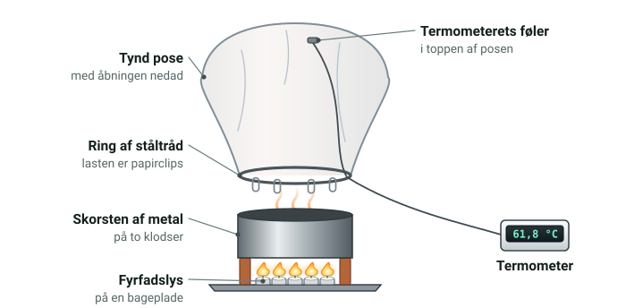

Modul 7 · Fælles: kemi og fysik › Modulplan › Arbejdsark
Konkurrencen: højeste lasteevne
Skriv jeres svar i felterne. De gemmes kun i denne browser.
Nu skal det hele bruges: idealgasligningen fra modul 1 og 2, lysenes effekt fra modul 2, Archimedes’ lov og Newtons 1. lov fra modul 3 og lasteevnen af en varmluftballon fra modul 4. Forløbets spørgsmål var, om man kan regne ud, hvor meget en ballon kan bære, før man sender den op. I dag finder I ud af det i to dyster: Først gætter I jeres ballons lasteevne med en beregning. Så skal ballonen løfte så meget som muligt.

Karakterskalaen er for sjov. Den bygger på en beregning med 10 lys: Et 12-tal kræver en rigtig god ballon, og ingen forventer et 12-tal med stjerne.
Karakter
00
02
4
7
10
12
12*
Lasteevne mindst
–
1 g
2 g
3 g
5 g
8 g
20 g
1Gættekonkurrencen: Hvor meget kan jeres ballon løfte?
Mål jeres ballon, og sæt tallene ind trin for trin. Regn ballonen som en cylinder med åbningen nedad.
Omkreds O i m
Højde h i m
mballon i g
Tkold i K
1.
Volumen og overflade (siden og toppen).
V = O2 · h4 · π ==m3
A = O · h + O24 · π ==m2
2.
Temperaturen i ballonen.
Tvarm = Tkold + PU · A ==K
3.
Massen af den kolde og den varme luft. Regn V om til liter, så får I massen i gram.
mkold = ρkold · V ==g
mvarm = mkold · TkoldTvarm ==g
4.
Lasteevnen.
mmax last = mkold − mvarm − mballon ==g
Vores gæt: g. Skriv det på tavlen.
2Resultater
Forsøg
Last i g
Steg ballonen?
Temperatur i ballonen i °C
1
2
3
4
Vores lasteevne: g Karakter:
3Hvorfor ramte I ikke helt?
Beregningen bygger på nogle antagelser. Hvilke holder ikke helt for jeres ballon, og gør de lasteevnen større eller mindre end beregnet?